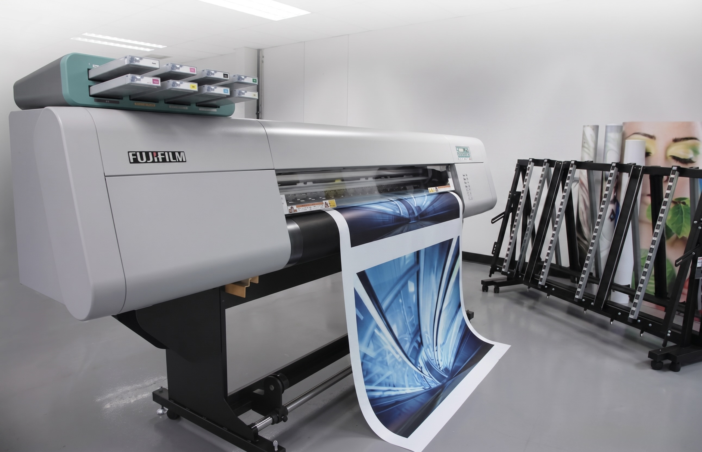

Print-on-Demand (POD) là mô hình kinh doanh trong đó sản phẩm chỉ được sản xuất sau khi có đơn hàng: khách đặt chiếc áo thêu tên thú cưng, xưởng mới bắt đầu thêu đúng chiếc áo đó, rồi giao thẳng đến tay khách. Không tồn kho, không ôm vốn hàng hóa, POD là mô hình rủi ro thấp nhất trong các mô hình thương mại điện tử, và đang là con đường phổ biến nhất để người Việt bước ra thị trường toàn cầu.
Năm 2026, Print-on-Demand không còn là "mô hình mới nổi", nó đã trở thành một ngành công nghiệp thực thụ. Trong bài viết này, chúng mình, đội ngũ Ethan Ecom, đơn vị vận hành xưởng in và thêu vi tính in-house tại Đồng Nai phục vụ thị trường Mỹ, sẽ vẽ lại toàn cảnh mô hình POD: cách vận hành, khác biệt so với dropshipping và bán buôn, các nhóm sản phẩm chủ lực, và con đường bắt đầu thực tế cho người mới.
01. Quy trình POD vận hành thế nào?
Toàn bộ mô hình Print-on-Demand xoay quanh một vòng lặp bốn bước, lặp lại hàng nghìn lần mỗi ngày trên các sàn thương mại điện tử lớn:
- Sáng tạo thiết kế: người bán tạo mẫu thiết kế và đăng bán trên Amazon, Etsy, TikTok Shop dưới dạng mockup, ảnh sản phẩm mô phỏng, chưa có sản phẩm thật nào được sản xuất.
- Khách đặt hàng: khách chọn mẫu, chọn size, màu, và rất thường xuyên kèm yêu cầu cá nhân hóa như tên, ảnh thú cưng, ngày kỷ niệm, tọa độ nơi hẹn hò đầu tiên.
- Xưởng sản xuất: chỉ khi đơn hàng đổ về, xưởng mới in hoặc thêu đúng một sản phẩm cho đúng một khách. Không sản xuất thừa, không đoán mò nhu cầu.
- Vận chuyển quốc tế và chăm sóc sau bán: sản phẩm được đóng gói, gắn tracking và giao xuyên biên giới đến tận tay khách, kèm chính sách đổi trả rõ ràng.
Điểm hay nhất của vòng lặp này: người bán chỉ cần tập trung vào hai việc tạo ra giá trị nhất, thiết kế đúng thị hiếu và marketing đúng kênh. Phần còn lại là bài toán của chuỗi sản xuất, và đây chính là nơi các đơn vị tự chủ xưởng như chúng mình tạo ra khác biệt.
02. POD khác dropshipping và bán buôn thế nào?
Người mới thường nhầm lẫn ba mô hình này vì cả ba đều "bán hàng online". Thực tế chúng khác nhau ở tận gốc: ai giữ hàng, ai chịu rủi ro, ai kiểm soát chất lượng:
| Tiêu chí | Print-on-Demand | Dropshipping | Bán buôn truyền thống |
|---|---|---|---|
| Vốn ban đầu | Rất thấp, chỉ cần chi phí thiết kế và marketing | Thấp, nhưng tốn ngân sách test sản phẩm liên tục | Cao, phải nhập lô hàng lớn trước khi bán |
| Tồn kho | Bằng không, sản xuất theo đơn | Không giữ hàng, phụ thuộc kho nhà cung cấp | Ôm toàn bộ tồn kho và chi phí lưu kho |
| Biên lợi nhuận | Trung bình đến cao, đặc biệt với sản phẩm cá nhân hóa | Mỏng, cạnh tranh chủ yếu bằng giá | Cao trên mỗi đơn vị nếu bán hết hàng |
| Kiểm soát chất lượng | Cao nếu tự sản xuất, trung bình nếu thuê ngoài | Gần như bằng không, chưa từng chạm vào sản phẩm | Cao, kiểm hàng trước khi nhập |
| Rủi ro lớn nhất | Chọn sai niche, thiết kế không bán được | Nhà cung cấp giao chậm, hàng kém, khóa tài khoản | Hàng tồn không bán được, chôn vốn |
Nói ngắn gọn: dropshipping đánh đổi kiểm soát lấy tốc độ, bán buôn đánh đổi vốn lấy biên lợi nhuận, còn POD đứng ở điểm cân bằng, vốn thấp như dropshipping nhưng sản phẩm mang thiết kế riêng của bạn, phù hợp nhất với người muốn xây thương hiệu đường dài.
03. Vì sao POD bùng nổ ở thị trường Mỹ?
Văn hóa tặng quà cá nhân hóa của người Mỹ trải dài quanh năm: Mother's Day, Father's Day, Christmas, sinh nhật, ngày cưới, lễ tốt nghiệp, thậm chí ngày nhận nuôi thú cưng. Mỗi dịp là một đợt sóng nhu cầu về những món đồ "chỉ dành riêng cho người ấy", thứ mà hàng sản xuất đại trà không bao giờ đáp ứng được.
Sản phẩm POD, đặc biệt là đồ thêu mang cảm giác thủ công cao cấp, đánh trúng tâm lý này với mức giá khách sẵn sàng trả cao hơn hàng đại trà 30–50%. Người Mỹ không mua chiếc áo; họ mua câu chuyện được thêu lên chiếc áo. Một chiếc sweatshirt thêu chân dung chú chó đã mất có giá trị cảm xúc mà không thuật toán định giá nào đo được.
Cộng hưởng thêm hạ tầng thương mại điện tử trưởng thành và logistics xuyên biên giới ngày càng nhanh, rẻ, kết quả là một thị trường khổng lồ, quanh năm có mùa vụ, luôn khát thiết kế mới từ những đội ngũ sáng tạo như Việt Nam.


04. Các nhóm sản phẩm POD phổ biến nhất
Không phải sản phẩm nào cũng "POD được" như nhau. Bốn nhóm dưới đây chiếm phần lớn doanh số của ngành, mỗi nhóm có luật chơi riêng:
Áo thun và hoodie in
Nhóm "quốc dân" của POD: chi phí sản xuất thấp, ra mẫu nhanh, hợp mọi trend, dễ test thị trường. Nhược điểm là cạnh tranh khốc liệt nhất, giá bán dễ bị kéo xuống, và nếu chỉ dựa vào in đại trà thì gần như không có rào cản gia nhập nào bảo vệ bạn.
Đồ thêu cao cấp
Sweatshirt, polo, mũ thêu là phân khúc chúng mình tâm đắc nhất: cảm giác nổi khối của chỉ thêu tự nó đã là tuyên ngôn chất lượng, cho phép định giá cao hơn hẳn đồ in. Nhược điểm là kỹ thuật khó, chất lượng phụ thuộc lớn vào file digitizing và tay nghề vận hành máy, nên ít đối thủ làm tốt. Khó cho người mới, nhưng chính cái khó đó là con hào phòng thủ. Nếu bạn phân vân giữa hai công nghệ, hãy đọc bài so sánh thêu vi tính và in áo của chúng mình.
Mug, poster và canvas
Nhóm trang trí nhà cửa và quà văn phòng: sản xuất đơn giản, biên lợi nhuận ổn, bùng nổ mùa lễ cuối năm, thiết kế quyết định tất cả. Nhược điểm là giá trị đơn hàng thấp và chi phí vận chuyển quốc tế chiếm tỷ trọng lớn, nhất là với hàng dễ vỡ như mug.
Quà tặng cá nhân hóa
Nhóm có biên lợi nhuận đẹp nhất: mỗi sản phẩm gắn tên, ảnh, ngày kỷ niệm của đúng một khách nên gần như không thể so sánh giá, tỷ lệ chuyển đổi rất cao. Nhược điểm là vận hành phức tạp, mỗi đơn là một lần chỉnh thiết kế, đòi hỏi kiểm duyệt kỹ để không thêu sai tên khách.
05. Thuê ngoài fulfillment hay tự chủ sản xuất in-house?
Phần lớn seller POD khởi đầu với dịch vụ fulfillment trung gian như Printful, Printify, dễ bắt đầu, không cần vốn máy móc. Nhưng đi cùng là ba cái giá phải trả: biên lợi nhuận mỏng vì chia phần cho trung gian, không kiểm soát được chất lượng, và mùa cao điểm thì xếp hàng chờ sản xuất như mọi seller khác.
Ở chiều ngược lại, tự chủ xưởng in-house như cách Ethan Ecom vận hành mang lại ba lợi thế quyết định:
- Biên lợi nhuận dày hơn: không chia phần cho trung gian, mỗi đơn hàng giữ lại nhiều giá trị hơn để tái đầu tư vào thiết kế và marketing.
- Kiểm soát chất lượng từng mũi kim: yếu tố sống còn với sản phẩm thêu cao cấp, một lỗi nhỏ ở thị trường Mỹ là một review 1 sao rất đắt.
- Tốc độ và độ linh hoạt: nhận cá nhân hóa phức tạp, xử lý đơn gấp mùa lễ mà fulfillment đại trà từ chối thẳng.
Tại xưởng của chúng mình ở Đồng Nai, mỗi đơn hàng đi qua một quy trình khép kín năm công đoạn:
- Thiết kế: đội sáng tạo hoàn thiện mẫu theo đơn, xử lý yêu cầu cá nhân hóa của khách.
- Digitize: với hàng thêu, thiết kế được "điêu khắc số" thành file lệnh cho máy thêu, công đoạn quyết định phần lớn chất lượng thành phẩm.
- Sản xuất: dàn máy thêu vi tính và hệ thống máy in vận hành song song, đơn nào về đúng công nghệ đó.
- QC: từng sản phẩm được kiểm tra mũi chỉ, màu sắc, chính tả tên khách trước khi đóng gói, không có khái niệm "kiểm xác suất".
- Ship: đóng gói chuẩn xuất khẩu, gắn tracking và bàn giao cho đối tác vận chuyển quốc tế.
Cả năm công đoạn nằm dưới một mái xưởng nghĩa là mọi sự cố, sai tên, lệch màu, đơn gấp, được xử lý trong vài giờ, không phải vài tuần email qua lại với nhà cung cấp ở nửa kia địa cầu.
06. Ưu và nhược điểm trung thực của mô hình POD
Chúng mình tin rằng người mới xứng đáng được nghe cả hai mặt, thay vì những lời hứa "thu nhập thụ động nghìn đô":
Ưu điểm
- Rào cản vốn gần bằng không: không nhập hàng, không thuê kho, thất bại của một thiết kế chỉ tốn chi phí thời gian.
- Test thị trường cực nhanh: ý tưởng sáng nay có thể lên sàn chiều nay, dữ liệu bán hàng trả lời thay cho phỏng đoán.
- Xây được thương hiệu riêng: khác dropshipping, sản phẩm POD mang thiết kế độc quyền của bạn, tài sản tích lũy theo thời gian.
- Quy mô linh hoạt: một người làm được, một đội trăm người cũng vận hành cùng mô hình đó.
Nhược điểm
- Biên lợi nhuận mỗi đơn không cao nếu thuê ngoài sản xuất, lợi nhuận thật nằm ở quy mô và ở việc kiểm soát chuỗi sản xuất.
- Cạnh tranh thiết kế gay gắt: mẫu bán chạy bị sao chép rất nhanh, buộc bạn phải sáng tạo liên tục.
- Phụ thuộc nền tảng: thay đổi thuật toán hay chính sách của sàn có thể ảnh hưởng doanh số qua một đêm.
- Chất lượng nằm ngoài tầm tay nếu không tự sản xuất, bạn chịu trách nhiệm với khách về thứ mình chưa từng cầm trên tay.
07. Bắt đầu với POD năm 2026 như thế nào?
Lộ trình chúng mình khuyên cho người mới: chọn một niche bạn thật sự hiểu → nghiên cứu sản phẩm bán chạy trong niche đó → tạo 20–30 thiết kế đầu tiên → chọn một kênh chủ lực (TikTok Shop cho tốc độ, Etsy cho biên lợi nhuận, Amazon cho quy mô) → đo lường và lặp lại. Đừng rải mỏng ra ba sàn cùng lúc khi chưa thắng ở đâu cả.
Và nếu bạn muốn học nghề từ gốc, từ chính công đoạn "điêu khắc số" tạo ra file thêu, kỹ năng đang được các xưởng POD toàn cầu săn đón, Ethan Ecom Academy đang tuyển sinh khóa đào tạo Digital EMB miễn phí 100%, học trực tiếp trên dàn máy tại xưởng cùng mentor của chúng mình.
"POD hạ thấp rào cản bắt đầu, nhưng nâng cao tiêu chuẩn để thắng: ai hiểu khách nhất và kiểm soát sản xuất tốt nhất, người đó về đích."
Đội ngũ Ethan EcomCâu hỏi thường gặp
Bắt đầu POD cần bao nhiêu vốn?
Nếu thuê ngoài sản xuất, bạn có thể bắt đầu với vài triệu đồng cho công cụ thiết kế và ngân sách marketing thử nghiệm. Chi phí lớn nhất giai đoạn đầu không phải tiền mà là thời gian học: hiểu niche, hiểu sàn, hiểu khách Mỹ.
Không biết thiết kế có làm POD được không?
Được. Nhiều seller thành công tập trung vào nghiên cứu thị trường và thuê designer thực thi ý tưởng. Tuy nhiên, hiểu công nghệ sản xuất, ví dụ khi nào nên thêu, khi nào nên in, giúp bạn brief chính xác, tránh những mẫu đẹp trên màn hình nhưng không sản xuất được.
POD có còn cơ hội trong năm 2026 không?
Còn, nhưng luật chơi đã đổi. Thời "đăng mẫu chữ lên áo là có đơn" đã qua; thị trường 2026 thưởng cho ai đi sâu vào niche, đầu tư cá nhân hóa và kiểm soát được chất lượng sản xuất, nhất là ở phân khúc thêu cao cấp, nơi rào cản kỹ thuật giữ cho cạnh tranh không bão hòa.
Ethan Ecom có nhận sản xuất cho seller bên ngoài không?
Trọng tâm của chúng mình là hệ sinh thái sản phẩm riêng, nhưng luôn mở với hợp tác phù hợp tiêu chuẩn chất lượng. Liên hệ support@ethanecom.com hoặc hotline +84 967 473 979 để trao đổi cụ thể.